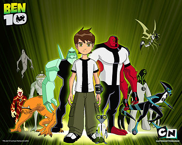
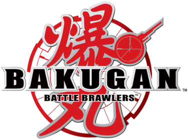

Sürekli dizi
Sürekli Dizi, (Özgün adı: Regular Show) J. G. Quintel tarafından yapılmış Amerikan çizgi dizisidir. İlk gösterimini ABD'de Cartoon Network'te 6 Eylül 2010 tarihinde yapmıştır. Türkiye'de ise 1 Şubat 2012 tarihinde Cartoon Network'te, daha sonra da 4 Şubat 2012 tarihinde TNT'te gösterime girmiştir. Mavi alakarga Mordecai ve rakun Rigby adlı parkta çalışan iki arkadaşın heyecanlı maceralarını konu almaktadır. Onlar dışında diğer ana karakterler: Benson, Skips, Pops, Kas Adam, Çak Beşlik Hayalet, Margaret ve Eileen. J. G. Quintel, California Institute of the Arts okulunda öğrenci olduğu günlerde kendisini geliştirme amaçlı olarak çoğu Sürekli Dizi karakterini orada geliştirmiştir. Ayrıca 2005 ve 2006 yıllarında kendince geliştirdiği kısa filmleri de bulunmaktadır: The Naive Man from Lolliland ve 2 in the AM PM.[3] Quintel, Cartoon Network'ün Cartoonstitute projesi için Sürekli Dizi programını seçmiştir. Proje için yeşil ışık yakılmıştır ve 6 Eylül 2010'da başlamıştır. Sürekli Dizi başladığından beri Cartoon Network için başarılı reytingler almıştır. Mayıs 2013'te, programın her hafta yaklaşık 2-2.5 milyon arası izleyicisi oldu. Seri eleştirmenlerden olumlu yorumlar almış, hem gençler hem de yetişkinler tarafından ilgi görmüştür. Sürekli Dizi birçok ödül için aday olmuştur— iki Annie Ödülleri ve dört Primetime Emmy Ödülleri dahil— Eggscellent (3. sezon, 18. bölüm) bölümü için bir ödül kazanmıştır.

Ben 10
Ben 10, Cartoon Network'te yayınlanmış ABD yapımı bir çizgi dizidir. Man of Action (Duncan Rouleau, Joe Casey, Joe Kelly, Steven T. Seagle) grubu tarafından oluşturulmuştur. İlk bölümü 27 Aralık 2005'te, son bölümü 15 Nisan 2008'de gösterilmiştir. Dizinin ikinci bölümünden itibaren özel olarak her cuma gösterilmiştir. Dizinin şarkısını Andy Sturmer yazmış ve (şarkıcı) Moxy tarafından seslendirilmiştir. Nisan 2008'de, Ben 10'in ardından sonraki serisi olan Ben 10: Alien Force yayınlanmıştır. Ben'in 5 yıl sonraki hâlini konu almaktadır. Ben 10: Alien Force bittikten sonra ise Ben 10'in yeni serisi olan Ben 10: Ultimate Alien başlamıştır. Ben 10: Ultimate Alien sona erdiğinde ise Ben 10: Omniverse ve ardından 2021 yılında final yapan Ben 10 serisi yayına girmiştir.

Bakugan
Bakugan Savaşçıları, kısaca Bakugan (Özgün adı: Bakugan Battle Brawlers, Japonca: 爆丸バトルブローラーズ - Bakugan Batoru Burōrāzu), Japon aksiyon, macera içerikli Anime televizyon dizisidir Anime serisi, Sega Toys ve Spin Master ile anlaşılarak Bakugan adında stratejik bir oyun piyasaya sürülmüş, metal kartlar ve manyetik estetik yüklü minyatür figürler (toplar) kullanılmıştır. Bir gün gökten kartlar yağmaya başlar. Başlangıçta tüm çocuklar bunu çok eğlenceli bulurlar. Ancak bir süre sonra o Bakugan'ların insanlarla konuşabildiklerini öğrenirler. Sonra da bu kartların nereden geldiğini öğrenmeleriyle maceraları başlar.